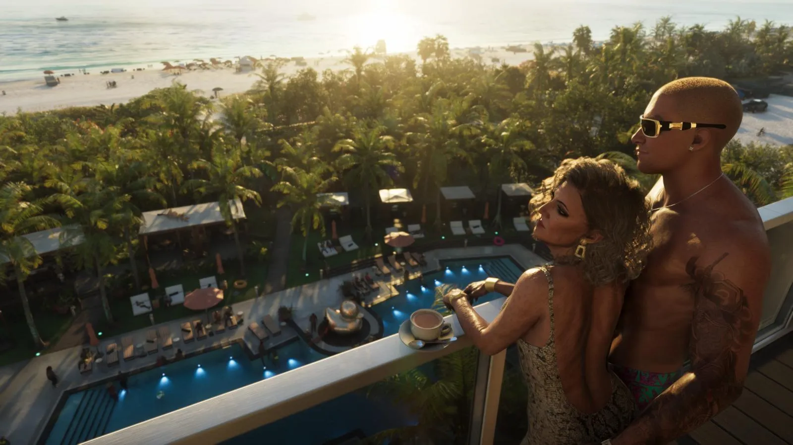

GTA 6: ответы на 30 частых вопросов
Опубликовано:

- 30 самых частых вопросов о GTA 6.
- Короткие ответы и ссылки на подробные статьи.
Вопросы и ответы
Когда выходит GTA 6?
19 ноября 2026 года. Дата выхода GTA 6: 19 ноября 2026
На каких платформах?
PS5, PS5 Pro, Xbox Series X и Series S.
Выйдет ли GTA 6 на PS4 и Xbox One?
Нет.
Когда GTA 6 выйдет на ПК?
Дата не объявлена. GTA 6 на ПК: когда выйдет
Сколько стоит GTA 6?
Standard — $79,99, Ultimate — $99,99. Издания и цены GTA 6: Standard и Ultimate
Когда можно скачать заранее?
Предзагрузка — с 12 ноября 2026.
Можно ли купить GTA 6 в России?
Напрямую — нет, но есть способы. Как купить GTA 6 в России
Есть ли русский язык?
Да, субтитры и интерфейс. Русский язык в GTA 6: есть ли озвучка
Будет ли русская озвучка?
Нет, озвучка только английская.
Будет ли онлайн?
На старте — только сюжетная игра. GTA 6 Online: будет ли мультиплеер
Кто главные герои?
Джейсон Дюваль и Лусия Каминос. Все персонажи GTA 6
Можно ли переключаться между героями?
Да, в любой момент. Новые механики GTA 6: что изменилось
Где происходит действие?
В штате Леонида — аналоге Флориды. Карта GTA 6: штат Леонида и все регионы
Какой главный город?
Вайс-Сити — аналог Майами. Вайс-Сити в GTA 6: главный город Леониды
Насколько большая карта?
Вайс-Сити примерно вдвое больше Лос-Сантоса. Размер карты GTA 6 по сравнению с GTA 5
Сколько регионов на карте?
Шесть официальных регионов. Карта GTA 6: штат Леонида и все регионы
О чём сюжет?
Сколько трейлеров вышло?
Два основных трейлера. Трейлеры GTA 6: что показали
Будет ли топливо у машин?
Да. Угон и топливо в GTA 6
Какой транспорт есть?
Машины, мотоциклы, лодки, вертолёты, гидропланы. Транспорт в GTA 6: что показала Rockstar
Какое оружие есть?
Оружие в GTA 6: что известно
Как зарабатывать деньги?
Как зарабатывать деньги в GTA 6
Можно ли грабить магазины?
Да, любой магазин. Как зарабатывать деньги в GTA 6
Есть ли спортзал?
Да, тренировки меняют тело героя. Новые механики GTA 6: что изменилось
Есть ли рыбалка и охота?
Будут ли чит-коды?
Станет известно после релиза — добавим в раздел «Секреты».
Что даёт предзаказ?
Vintage Vice City Pack и месяц GTA+ для цифровых. Издания и цены GTA 6: Standard и Ultimate
Коробочное издание — это диск?
Нет, это код для загрузки.
Кто разработчик?
Rockstar Games, издатель — Take-Two Interactive.
Какие есть отсылки в трейлерах?
Отсылки и детали в трейлерах GTA 6
Источники: Rockstar Games — официальный сайт GTA VI (rockstargames.com/VI), Rockstar Newswire.
Каждый день — одно сравнение: кадр игры рядом с реальным фото. Подписывайтесь:
YouTubeInstagramTikTok